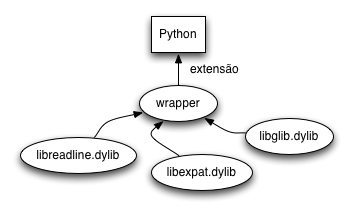
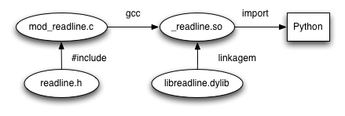
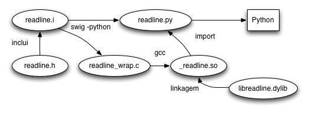

Binding? O que é isso e para que serve?
Um binding é literalmente a ligação ou ponte entre dois sistemas. No caso de bindings para Python, chama-se de extensão a ligação entre bibliotecas desenvolvidas em C ou C++ para o uso direto no interpretador Python.
Para fazer uma extensão, é necessário “embrulhar” (wrap) a API da biblioteca através de métodos que são expostos por uma API definida em C do Python.
Por que eu devo fazer uma extensão em Python? O que ganho com isso? Talvez o motivo seja...
O propósito desse artigo é apresentar um wrapper em cima da biblioteca readline ou libedit nos sistemas BSD, por ser de fácil implementação e ter boa disponibilidade nos sistemas Unix; só é bom lembrar que o interpretador Python já provê a mesma funcionalidade com o modulo readline.
Python C API
Para trabalhar com a API de extensões deve-se incluir o cabeçalho Python.h, este arquivo inclui “de brinde” os cabeçalhos stdio.h, string.h, errno.h,
limits.h e stdlib.h.
Na Python C API, todos os nomes visíveis de símbolos começam com o prefix Py e os nomes internos têm como prefixo _Py. A API disponibiliza um tipo opaco PyObject (na verdade um ponteiro para esse tipo) que é análogo aos objetos em Python.
Os objetos PyObject vivem sempre na memória heap, a exceção à regra são os objetos PyTypeObject declarados como static.
Todo o PyObject possuem um tipo associado e são os elementos utilizados como argumentos e retorno de valores para o interpretador. São definidas macros especiais para testar os tipos, por exemplo PyList_Check(array) retorna verdadeiro ou falso se a variável array for do tipo lista.
Como os objetos vivem na heap, é necessário fazer o controle manual de referências, através das macros Py_INCREF e Py_DECREF, essa é uma tarefa propensa a erros de vazamento de memória.
Vamos parar um pouco com a teoria e ir para prática. No arquivo de inclusão readline.h podemos ver a declaração das funções:
char *readline(const char *); int add_history(const char *);
readline() espera a entrada de dados do usuário, até que seja finalizada por um ENTER (que não é armazenado), o resultado é uma string pré-alocada com os dados digitados. O parâmetro da função é um prompt que é impresso para o usuário.add_history acrescenta o parâmetro no histórico do usuário. Útil para permitir voltar o histórico, como faz a linha de comando do shell Bash.Vejamos como fazer o wrapper de readline()
#include <Python.h>
#include <readline/readline.h>
PyObject *
fn_readline(PyObject *self, PyObject *args)
{
char *prompt;
char *line;
PyObject *o;
if (!PyArg_ParseTuple(args, "s", &prompt))
return NULL;
line = readline(prompt);
o = Py_BuildValue("s", line);
free(line);
return o;
}
PyObject* funcao(PyObject *self, PyObject *args) é a forma geral de qualquer função ou método (por isso o self) emcapsulado pela API em C;PyArg_ParseTuple “desempacota” um objeto Python para uso em C. Neste caso, o argumento da função é uma tupla, mas o parâmetro que queremos é uma string;NULL sinaliza ao interpretador uma condição de erro;Py_BuildValue é utilizado para construir (“embrulhar”) um novo objeto Python (um PyObject *) a partir de elementos em C. neste caso, uma string em Python a partir de uma string em C;readline() na variável line deve ser desalocada para evitar vazamento de memória.PyObject.Continuaremos para a função add_history():
PyObject *
fn_add_history(PyObject *self, PyObject *args)
{
char *line;
int status;
PyObject *o;
if (!PyArg_ParseTuple(args, "s", &line))
NULL;
status = add_history(line);
o = Py_BuildValue("i", status);
return o;
}
Basicamente igual a função anterior, a única diferença é o retorno de um valor inteiro em vez de uma string. Esse valor não tem muita importância, poderia-se retornar um None, mas o None possui uma peculiaridade, vejamos...
// Versão alternativa, retorna None
PyObject *
fn_add_history(PyObject *self, PyObject *args)
{
char *line;
if (!PyArg_ParseTuple(args, "s", &line))
NULL;
add_history(line);
Py_INCREF(Py_None);
return Py_None;
}
O idioma para retorna um objeto None exige o controle referências. Não se deve confundir o retorno de NULL, que repassa uma condição de erro com o retorno de None, que é um valor perfeitamente normal.
O que falta para finalizar o binding é a declaração de quais são as funções que o módulo disponibiliza e sua iniciação, vejamos agora.
static PyMethodDef
methods[] = {
{"readline", fn_readline, METH_VARARGS, NULL},
{"add_history", fn_add_history, METH_VARARGS, NULL},
{NULL, NULL, 0, NULL}
};
PyMODINIT_FUNC
initreadline(void)
{
(void) Py_InitModule("readline", methods);
}

Já temos tudo o que é necessário para o binding, está na hora de gerar o módulo para uso no Python, esta linha de compilação funciona no Mac OS X, para o Linux troque -dynamiclib por -PIC.
$ gcc -dynamiclib -I/usr/include/python2.5 -lpython -lreadline mod_readline.c -o readline.so
Testando...
>>> import readline
>>> dir(readline)
['__doc__', '__file__', '__name__', 'add_history', 'readline']
>>> line = readline.readline("prompt$ ")
prompt$ Sisters of Mercy
>>> print line
Sisters of Mercy
>>> readline.add_history("Bird On The Wire")
0
>>> readline.add_history("So Long, Marianne")
0
>>> readline.readline("] ")
] seta para cima navega no histórico
Quais são as vantagens de se usar a API em C?
Quais são as desvantagens?
SWIG
O SWIG (Simplified Wrapper and Interface Generator) é um sistema que permite gerar bindings de bibliotecas em C ou C++ para diversas linguagens de programação, em especial olharemos os requisitos de uso do SWIG para a linguagem Python.
O SWIG é um projeto maduro, surgiu em 1995 e praticamente automatiza o processo de criação de módulos de extensão em Python.
O processo de geração dos bindings começa com a definição de um arquivo contendo as inclusões das bibliotecas que se deseja fazer o binding, além de outra seção que permite filtrar quais elementos da biblioteca serão expostos para os bindings.
O SWIG trabalha diretamente com os arquivos #include, portanto um bom conhecimento de C faz-se necessário. Em baixo nível, o SWIG gera código em C de cola para a API em C do Python.
O resultado do processamento do utilitário swig é um arquivo em C que deve ser compilado e linkado diretamente com a biblioteca que se deseja fazer binding e o arquivo em Python que expõe a API como um módulo em Python.
Arquivo de interface readline.i do binding para o SWIG. Este arquivo possui três partes lógicas:
%module que define qual será o nome do módulo para Python;%{ ... %} é reservado para arquivos de inclusão;Embora o arquivo readline.h contenha várias funções e variáveis, nós só estamos interessados apenas em expor as funções readline() e add_history().
// readline.i
%module readline
%{
#include <readline/readline.h>
%}
char *readline(const char *);
int add_history(const char *);
O processo completo para a geração do binding é então:
$ swig -python readline.i $ gcc -c readline_wrap.c -I/usr/include/python2.5 $ gcc -dynamiclib readline_wrap.o -lpython -lreadline -o _readline.so
No caso do exemplo de readline, são gerados o arquivo em C readline_wrap.c e o módulo em Python que se chama readline.py.
Exemplo de uso:
>>> import readline
>>> readline.add_history("quit")
0
>>> line = readline.readline("] ")
] quit tecla para cima
>>> print line
quit
>>> print type(line)
<type 'str'>
A maneira mais fácil de usar o SWIG é incluir literalmente o conteúdo do arquivo ou dos arquivos de inclusão da biblioteca que se deseja fazer o binding no arquivo de interface, pode ser um tiro certo fazer isso. Algo como:
%module readline
%{
#include <readline/readline.h>
#include <readline/history.h>
%}
%include /usr/include/readline/readline.h
%include /usr/include/readline/history.h
Infelizmente o processo falha miseravelmente, mas não é objetivo desse artigo explicar o porque.
Quais são as vantagens do SWIG?
Quais são as desvantagens do SWIG?
.i, caso contrário é melhor usar um binding direto com a API em C.